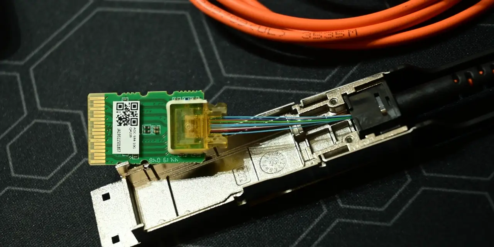

루멘텀 홀딩스 주주가 지금 가장 궁금해할 질문은 “AI 데이터센터가 광부품을 더 많이 쓰느냐”가 아닙니다. 그 대답은 이미 어느 정도 나와 있습니다. GPU 클러스터가 커질수록 서버와 스위치 사이를 구리선만으로 묶기 어려워지고, 전력 효율과 거리, 대역폭 때문에 광연결이 더 중요해집니다. 더 중요한 질문은 루멘텀이 이 수요를 높은 마진의 반복 매출로 바꿀 수 있느냐, 그리고 엔비디아라는 강력한 고객 신호가 특정 고객 의존이라는 부담으로 돌아오지 않느냐입니다.
루멘텀의 FY2026 3분기 실적 발표를 보면 시장이 흥분한 이유는 분명합니다. 매출은 8억840만 달러로 전년 동기 대비 90.1% 늘었고, GAAP 매출총이익률은 44.2%, Non-GAAP 매출총이익률은 47.9%였습니다. Non-GAAP 영업이익률도 32.2%까지 올라왔습니다. 광부품 수요가 단순히 매출만 키운 것이 아니라 제품 믹스와 가격 discipline을 통해 이익률에도 반영됐다는 점이 핵심입니다.
다만 루멘텀을 “엔비디아가 찍은 광통신 수혜주”로만 읽으면 판단이 거칠어집니다. 엔비디아와 루멘텀의 전략 계약은 다년 구매 약정, 미래 용량 접근권, 20억 달러 투자까지 포함한 강한 신호입니다. 하지만 강한 신호일수록 확인해야 할 숫자도 많아집니다. 생산능력은 언제 열리는지, 레이저 칩과 광모듈 믹스는 마진을 지키는지, 고객이 한곳으로 몰리는지, 전환우선주와 증설 비용이 주주 몫을 얼마나 희석하는지를 같이 봐야 합니다.
AI 수요는 광부품 주문으로만 끝나지 않습니다

AI 데이터센터에서 광부품은 화려한 전면 상품이 아닙니다. 고객이 체감하는 모델 성능 뒤쪽에서 GPU와 스위치, 랙과 랙, 클러스터와 클러스터를 잇는 부품입니다. 그래서 투자자에게는 더 까다롭습니다. 수요가 강한 것은 맞지만, 제품은 고객 시스템 안에 들어가야 하고, 고객의 차세대 아키텍처 일정과 맞아야 하며, 대량 공급 단계에서 수율이 흔들리면 마진이 바로 훼손될 수 있습니다.
루멘텀이 강한 점은 광학과 포토닉스, 고성능 레이저, 모듈, optical subsystem을 오래 다뤄 온 경험입니다. AI 데이터센터가 커질수록 초고속 연결, 낮은 전력 손실, 안정적인 공급이 중요해지는데 이 부분은 새로 진입한 회사가 단기간에 따라오기 어렵습니다. 특히 레이저 칩, pump laser, narrow linewidth laser assembly 같은 부품은 겉으로 드러나는 이름보다 고객 시스템에서 더 민감하게 평가됩니다.
반대로 주주가 조심해야 할 부분도 같은 자리에서 나옵니다. 고객이 원하는 스펙이 빠르게 바뀌면 특정 세대 제품의 수명은 예상보다 짧아질 수 있습니다. 데이터센터 고객은 물량이 크지만 협상력도 큽니다. 광부품 업체가 공급 부족을 이유로 가격을 올릴 수 있는 시간은 영원하지 않습니다. 결국 루멘텀의 진짜 힘은 “AI 수요가 있다”가 아니라 “그 수요 속에서도 높은 마진과 고객 인증을 반복할 수 있다”에서 나옵니다.
증설 일정은 매출보다 먼저 확인해야 할 병목입니다
관련 영상
AI 붐의 최종 수혜, 포스트 HBM을 노리는 광트랜시버 설명 영상
그린즈버러 InP 제조시설 발표는 루멘텀의 성장 스토리에서 중요한 장면입니다. 회사는 노스캐롤라이나에 24만 제곱피트 규모 시설을 확보했고, 이곳에서 AI 데이터센터에 필요한 InP 기반 광소자와 CW·UHP 레이저를 생산하겠다고 밝혔습니다. 엔비디아는 이 시설의 고객으로 언급됐고, 루멘텀은 다른 대형 AI 인프라 고객도 지원하겠다고 설명했습니다.
하지만 이 발표에서 가장 중요한 단어는 “시설”이 아니라 “램프”입니다. 회사는 해당 시설의 생산 ramp가 2028년 중반으로 예상된다고 밝혔습니다. 이 말은 현재 주가가 기대하는 미래 매출 중 일부가 아직 설비 개조, 인력 이전, 공정 세팅, 고객 검수, 수율 안정화라는 긴 통로를 지나야 한다는 뜻입니다. 투자자는 시설 규모보다 실제 생산 시작 시점과 고객 매출 인식 시점을 구분해야 합니다.
증설은 좋은 소식이지만 동시에 비용 약속입니다. 공장과 장비, 인력, 품질 관리 체계는 주문이 늘기 전에 먼저 들어갑니다. 수요가 계획대로 커지면 이 고정비는 높은 마진으로 흡수됩니다. 반대로 고객 일정이 늦어지거나 제품 수율이 낮으면 고정비는 먼저 손익계산서에 남습니다. 루멘텀의 FY2026 3분기 마진이 인상적이었던 만큼, 앞으로 시장은 “마진이 계속 좋아질 수 있느냐”를 더 엄격하게 따질 가능성이 큽니다.
코히런트와 브로드컴을 같이 보면 가격 힘이 보입니다
루멘텀을 볼 때 코히런트와 브로드컴을 함께 놓는 이유는 각 회사가 AI 연결 병목을 다른 위치에서 만지고 있기 때문입니다. 코히런트의 FY2026 3분기 실적은 매출 18억1,000만 달러, GAAP 매출총이익률 37.7%, Non-GAAP 매출총이익률 39.6%였습니다. 코히런트는 포토닉스와 레이저, 소재 포트폴리오가 넓어 루멘텀보다 분산된 회사에 가깝습니다.
루멘텀은 상대적으로 “AI 데이터센터 광부품 수혜”가 더 날카롭게 보이는 종목입니다. 그래서 주가가 좋을 때는 더 빠르게 반응할 수 있지만, 기대가 틀어질 때도 더 예민합니다. 코히런트는 사업 범위가 넓어 완충력이 있지만, 광연결만으로 전체 실적을 설명하기 어렵습니다. 브로드컴은 광부품보다는 스위칭, 네트워킹 반도체, 맞춤형 실리콘의 힘이 크기 때문에 고객과 시스템 차원에서 가격 결정력을 설명하기 쉽습니다.
이 비교에서 루멘텀 주주가 얻어야 할 결론은 간단합니다. 루멘텀의 프리미엄은 광부품 scarcity와 고객 인증, 엔비디아 전략 관계가 유지될 때 정당화됩니다. 하지만 고객이 여러 공급사를 병행하고, 브로드컴·마벨 같은 네트워킹 칩 업체가 전체 아키텍처의 협상력을 가져가면 루멘텀의 가격 힘은 제한될 수 있습니다. 광연결이 중요해지는 것과 루멘텀의 단가와 마진이 오래 유지되는 것은 같은 문장이 아닙니다.
다음 실적에서 볼 숫자
첫 번째로 볼 숫자는 매출 성장률보다 제품 믹스입니다. 루멘텀의 FY2026 3분기 실적에서 시장이 좋아한 부분은 매출 증가와 동시에 Non-GAAP 매출총이익률과 영업이익률이 개선됐다는 점입니다. 다음 분기에도 레이저 칩과 scale-across components 같은 고마진 부품이 비중을 지키는지 확인해야 합니다. 매출이 늘어도 저마진 물량이 섞이면 주가가 기대한 그림과 달라집니다.
두 번째는 엔비디아 관련 매출의 질입니다. 다년 구매 약정과 20억 달러 투자는 매우 강한 신호이지만, 특정 고객의 투자 계획이 루멘텀의 실적을 좌우하게 되면 밸류에이션 할인 요인이 될 수도 있습니다. 좋은 방향은 엔비디아 매출이 anchor 역할을 하면서 다른 AI 인프라 고객까지 끌어오는 것입니다. 나쁜 방향은 엔비디아 일정에 회사 전체 실적과 주가가 지나치게 묶이는 것입니다.
세 번째는 현금과 희석입니다. 루멘텀은 FY2026 3분기 말 현금·현금성자산·단기투자 31억7,230만 달러를 보유했지만, 이 증가분에는 2026년 3월 Series A Convertible Preferred Stock 발행 영향이 포함돼 있습니다. 현금이 많아졌다는 점은 증설 방어력입니다. 동시에 전환우선주와 희석 가능성은 주당 가치 계산에서 빼놓을 수 없습니다. AI 인프라 투자주에서는 “회사 성장”과 “주당 성장”을 분리해 봐야 합니다.
마지막으로 그린즈버러 시설의 일정입니다. 생산 ramp가 2028년 중반으로 제시된 만큼, 2026년과 2027년 실적은 기존 시설과 현재 고객 주문, 제품 믹스 개선이 얼마나 버티는지가 중요합니다. 새 시설이 열리기 전까지 기대만 높아지고 비용이 먼저 늘면 주가는 피곤해질 수 있습니다. 반대로 기존 설비에서 높은 마진을 유지하고, 새 시설 일정까지 안정적으로 진행되면 루멘텀은 AI 광연결 투자 사이클에서 더 오래 남을 수 있습니다.
루멘텀 홀딩스는 분명 흥미로운 종목입니다. GPU와 HBM 다음 병목이 네트워크와 광연결로 이동한다는 큰 방향은 설득력이 있습니다. 다만 좋은 방향이 좋은 투자 결과를 보장하지는 않습니다. 주주는 루멘텀을 볼 때 엔비디아 이름보다 Non-GAAP 마진, 고객 다변화, InP 시설 ramp, 전환우선주 희석, 코히런트·브로드컴 대비 가격 힘을 함께 봐야 합니다. 이 다섯 가지가 같이 맞아야 AI 광부품 수요가 루멘텀 주주의 몫으로 남습니다.